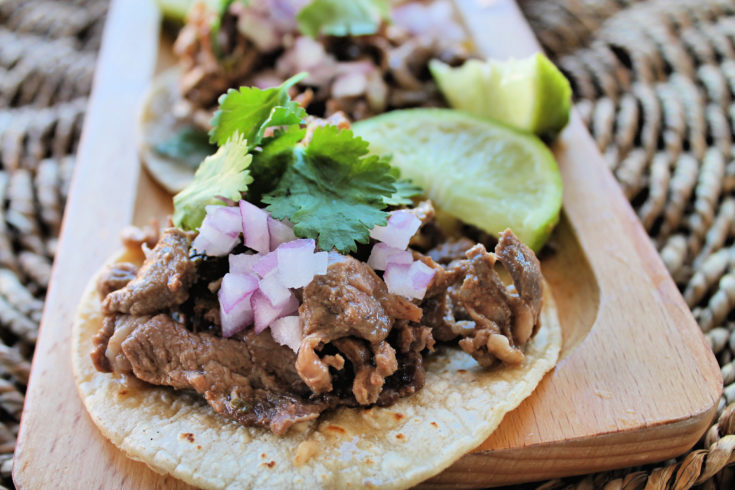

Tacos de Asada

Description
Carne asada tacos are the first tacos in history. It is
believed that the first tacos appeared in the 1500s, made
with thin slices of meat cooked over hot coals. The meat was
placed in a corn tortilla and topped with guacamole, onions,
chili peppers, and lime - also knows as the carne asada taco.
Over time, people started to make other versions in different
regions, and nowadays we are witnessing a true taco-mania,
and it all began with the simple carne asada tacos.
Ingredients
- 2 tablespoons reduced sodium soy sauce
- 2 tablespoons freshly squeezed lime juice
- 2 tablespoons canola oil, divided
- 3 cloves garlic, minced
- 2 teaspoons chili powder
- 1 teaspoon ground cumin
- 1 teaspoon dried oregano
- 1 1/2 pounds skirt steak, cu tinto 1/2-inch pieces
- 12 mini fllour tortillas, warmed
- 3/4 cup diced red onion
- 1/2 cup chopped fresh cilantro leaves
- 1 lime, cut into wedges
Steps
- In a medium bowl, combine soy sauce, lime juice, 1
tablespoon canola oil, garlic, chili powder, cumin and
oregano.
- In a gallon size Ziploc bag or large bowl, combine soy
sauce mixture and steak; marinate for at least 1 hour up to
4 hours, turning the bag occasionally.
- Heat remaining 1 tablespoon canola oil in a large skillet
over medium high heat. Add steak and marinade, and cook,
stirring often, until steak has browned and marinade has
reduced, about 5-6 minutes, or until desire doneness.
- Serve steak tortillas, topped with onion, cilantro and lime